Using Arduino Explorer App
Launch the Arduino® Explorer app using any of these methods:
In the MATLAB® Command Window, enter
arduinoExplorer.On the Apps tab on the MATLAB Toolstrip, under Test and Measurement, click the app icon.
After launching the app, select the device card corresponding to the Arduino board you want to work with.
If the app does not detect your device automatically and it does not appear in the All Hardware section, use one of the configuration cards on the top to manually add your device based on connection type.
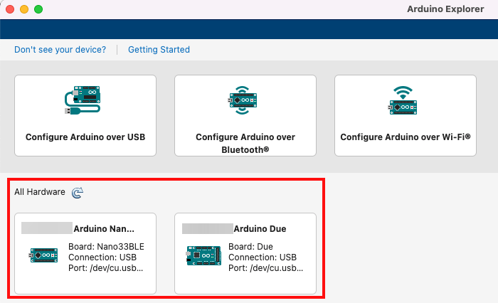
On the Apps tab of MATLAB Toolstrip, under Test and Measurement, click the Hardware Manager app icon. In the All Hardware section, click the device card of the detected Arduino board. This launches the Arduino Explorer app.
Set Up and Connect to Official Arduino Boards and Clone Boards
The Arduino Explorer app can automatically detect official Arduino boards that are connected to your computer. The app also detects and displays other unofficial (clone) Arduino boards if they were previously set up and configured using the app.
If you don't see your connected Arduino board in the All Hardware section, use one of the configuration cards on the app home screen to manually add your Arduino board:
Configure USB Arduino
Configure Bluetooth Arduino
Configure Wi-Fi Arduino
To connect to the board for the first time, follow the instructions that appear when you click any of the (name the UI element).
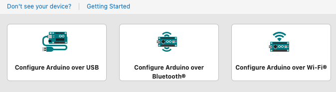
Tip
The All Hardware section displays all unofficial (clone) Arduino boards, even the ones added manually, with a close button X. You can remove an unofficial board from the list by clicking the X button.
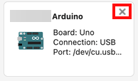
Manage Required Libraries
After launching a new app session, you can manage the required libraries by completing the following steps.
Ensure that the Arduino board is connected to the computer over USB.
Note
Installing Arduino libraries on to the board is supported only over a USB connection.
Click Libraries in the Configure section of the app.
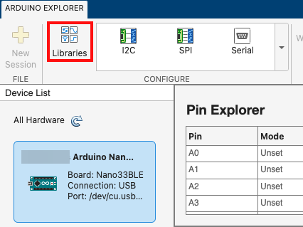
The Manage Libraries window displays the installed libraries. To install a new set of libraries on to the board, select the required libraries and click Install Libraries. To remove a library which was installed on the Arduino board, but not required for the current session, you can clear the corresponding library selection and then click Install Libraries.
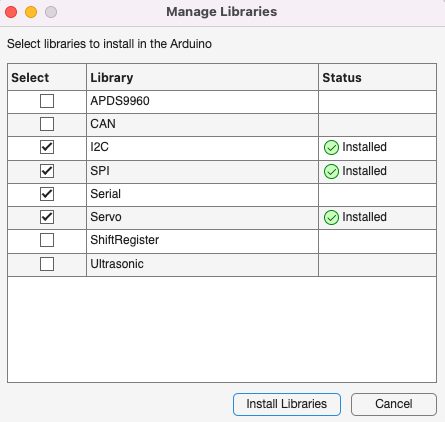
Configure Read and Write for GPIO Pins
You can use the Pin Explorer pane and Pin Configuration panel in the Arduino Explorer app to configure each pin to read and write data.
In the Pin Explorer pane, click the row corresponding to the pin that you want to configure. The Pin Configuration panel displays the options you can use to configure the selected pin.
In the Pin Configuration panel, select the Mode from the list, and if required specify a Label to uniquely identify the pin.
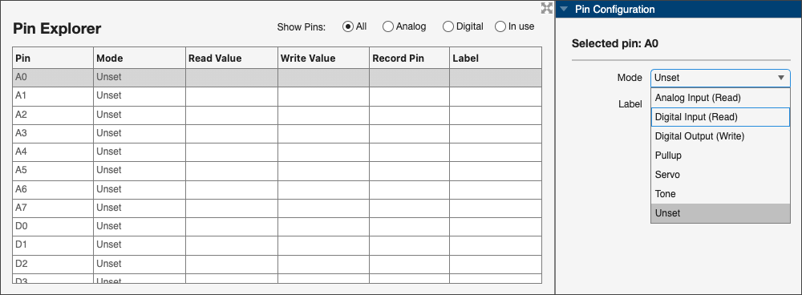
After you select the mode, the columns are automatically updated with the values. For example, if you set the mode to Analog Input, the app starts reading data from the corresponding pin and displays it in the Read Value column.
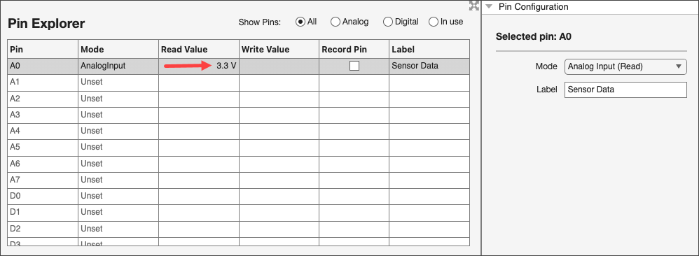
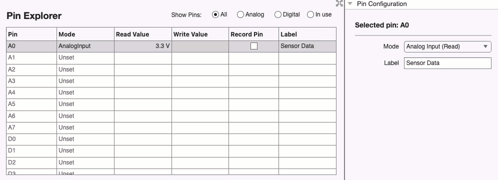
If you select a mode that allows you to write data to the pin, specify a value in the Write Value column, and the app writes the specified data to the pin.
Tip
The Arduino Explorer app displays the pinout diagram of the selected board in a panel at the bottom right corner of the app window.
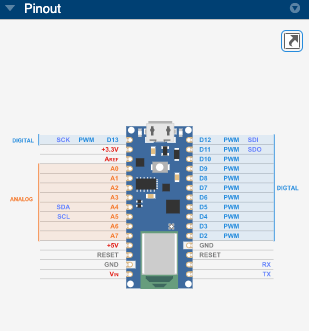
To view the pinout diagram more efficiently:
Increase the area of the Pinout panel — Maximize the panel by double-clicking it and collapse the other adjacent panels.
Open pinout panel in another window — Click the
 icon that appears at the top of
the pinout panel.
icon that appears at the top of
the pinout panel.
For details regarding recording and visualizing data, see Visualize and Record Data from Arduino Pins.
Note
Clicking New Session in the app resets all Arduino pin configurations and sets them to the Unset mode.
Connect to SPI Device
Arduino Explorer app lets you configure the SPI communication interface, which you can then use to read and write data to SPI devices connected to the Arduino hardware.
To do this, click the SPI icon in the Configure section of the app. Use the Set Up SPI Device window to select the pins and configure the SPI communication properties.
Note
To identify the pins that can be used as chip select pins, see Chip Select Pins.
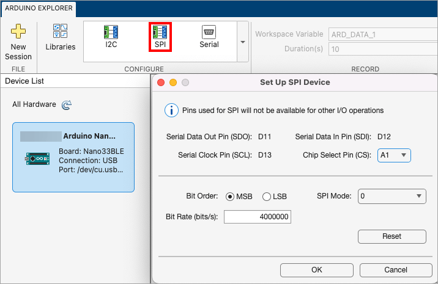
After you set the values, click OK. All the pins that support SPI are configured for communicating using the protocol and they all are displayed in one row in the Pin Explorer.
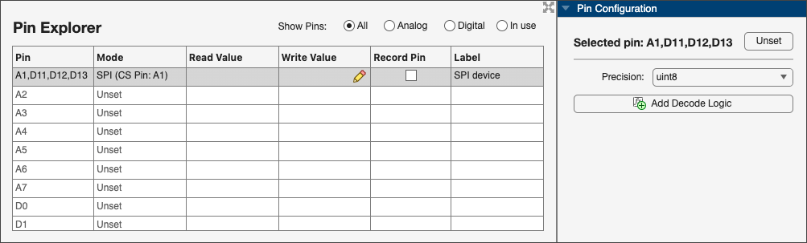
To control the precision in read and write operations, set the Precision value in the Pin Configuration panel.
This automatically updates the values in the columns in the Pin Explorer window. In the SPI interface, writing data to the device, in a cell under the Write Value column, also reads equal bytes of data from the device into the Read value column.
For more information on Add Decode Logic option, see Decode Read Data.
For more information on recording and visualizing data, see Visualize and Record Data from Arduino Pins.
Connect to I2C Device
You can also use the Arduino Explorer app to configure the I2C communication interface and use the interface to read and write data to I2C devices connected to the Arduino hardware.
Click theI2C icon in the Configure section of the app and use the Set Up I2C Device window to select the I2C Bus (if your board supports more than one bus) and modify the I2C properties.
Tip
Click Scan I2C to scan the I2C interface for all the available I2C device addresses.
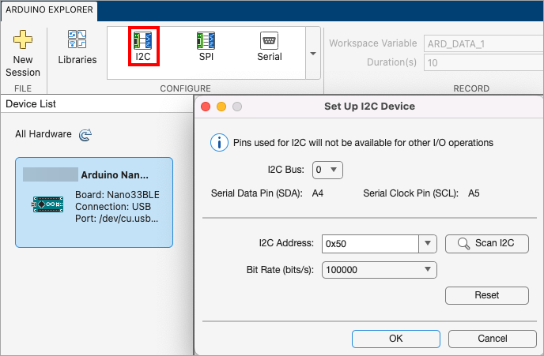
Once you set the I2C properties, click OK. The Pin Explorer window now displays a row for I2C communication.
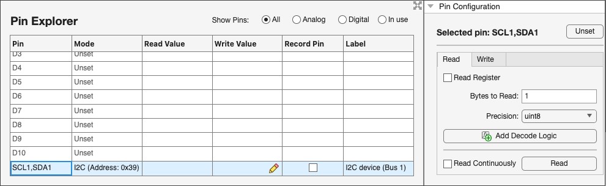
Configure Read and Write for I2C
Use the Pin Configuration panel corresponding to the I2C interface to perform one of these operations.
Read or write
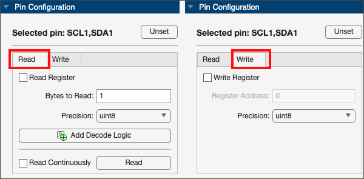
Register read or write
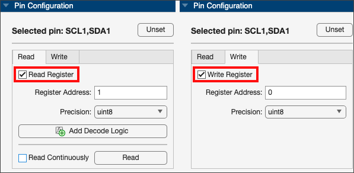
The value you specify in the Precision parameter must match the size of the device register.
Once you set the parameter values (in the read and register read operations), click Read. The Read Value column corresponding to the I2C row in the Pin Explorer pane displays the value as read by the SDA pin or the register address.
Once you set the parameter values (in the write and register write operations), edit the corresponding cell in the Write Value column and enter the value to be written to the SDA pin or the register address.
Perform continuous reading of data.
Select the Read Continuously option and then click Start Reading to continuously read data from the I2C device. The value displayed in Read Value column changes continuously based on the data being read. Click Stop Reading to stop reading the data from the I2C device.
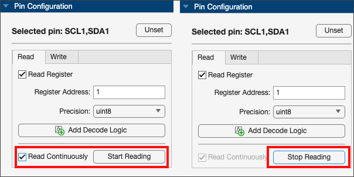
For more information on the Add Decode Logic option, see Decode Read Data.
For more information on recording and visualizing data, see Visualize and Record Data from Arduino Pins.
Connect to Serial Device
The Arduino Explorer app lets you configure the serial communication interface and use the interface to read and write data to serial devices connected to the Arduino hardware.
Click the Serial icon in the Configure section of the app and use the Set Up Serial Device window to select the Serial Port and modify serial communication properties.

After you set the values, click OK. The Pin Explorer displays the row specific to serial pin.
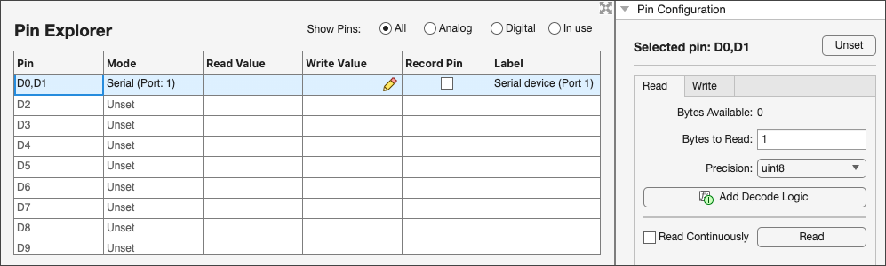
You can perform read and write using serial pins by following the same procedure as described in Configure Read and Write for I2C.
Decode Read Data
The Arduino Explorer app lets you decode raw data from the communication protocol interfaces of the Arduino board and view the decoded data in the app. In the Pin Explorer pane, select the row corresponding to a communication interface (I2C, SPI or Serial) then click Add Decode Logic in the Pin Configuration panel.
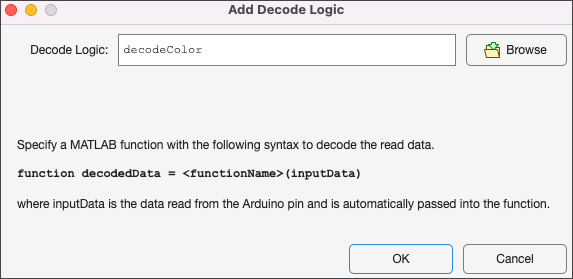
In the Add Decode Logic window, specify a MATLAB function or use the Browse button to select a MATLAB function that contains the logic to decode the data. Click OK after selecting the file.
Note
Ensure that you use the syntax as suggested in the Add Decode Logic window and that the function is saved on the MATLAB path.
The Decode Logic field in the Pin Configuration panel updates to show the name of the file.
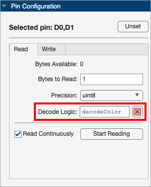
Once you provide the decode logic:
The Read Value column in the Pin Explorer window displays the decoded data instead of raw values from the interface.
The Log panel of the app now displays a new column named Decoded Data with the decoded values.
Visualize and Record Data from Arduino Pins
You can use the Plot and Log panels in the app to visualize and analyze data from the Arduino board. The app also provides an option to record data from multiple pins to a Workspace variable for further analysis.
Plot Panel
The Plot panel of the app enables you to interactively view data read from the Arduino board. Using the Plot panel, you can:
Visualize data from all read pins.
Use Plot Settings to further customize the display (grid, axes, and so on).
Toggle visibility of signals in the plot by interactively clicking the corresponding signal in the legend.
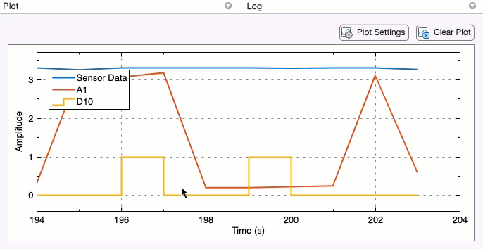
Log Panel
The Log panel of the app provides a table with data communication details such as time stamp, type of operation, data value, value of decoded data, size of data, and the data type. This table is particularly useful when you are continuously reading data from communication protocol interfaces (I2C, SPI, and Serial).
You can select the Display Format to display data values
in the appropriate format in the table. You can set the data format to
Default, Hexadecimal,
ASCII, and Binary. If
you set data format to Default, the log displays raw
data from pins.
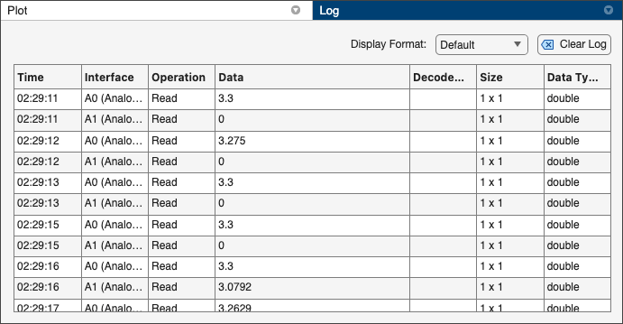
The app also provides an option to export the entire log as a timetable into the Workspace. To do this, click Export Log in the Export section of the app.
Record Data
The Arduino Explorer app lets you record the data from Arduino pins to a Workspace variable for a specified duration. To do this:
Select the check box in the Record Pin column in the Pin Explorer window corresponding to the pins.
In the Record section of the app, specify the Workspace Variable name and Duration, and then click Record.
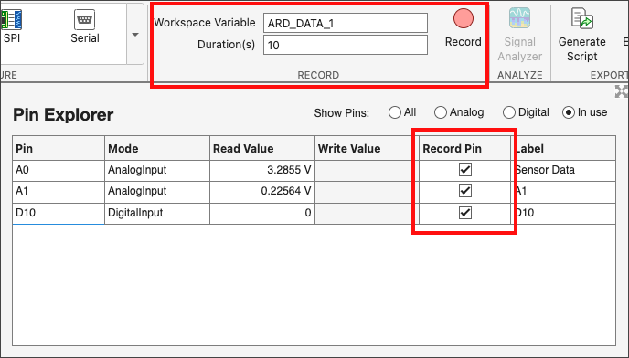
You can view the status of the data recording process in the app's status bar.

If you want to stop recording before the specified duration, click Stop in the Record section of the app.
The recorded data is saved to the workspace variable and the updated status displays in the app's status bar.
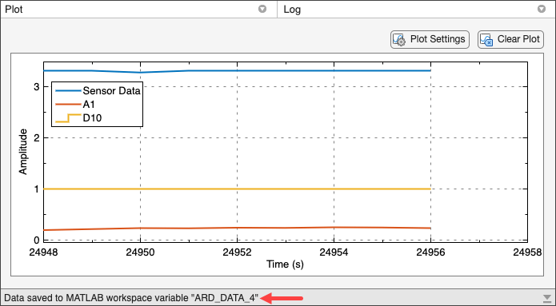
Once the data recording is complete, you can click Signal Analyzer in the Analyze section of the app to analyze the recorded data.
Generate MATLAB Script
You can use the Generate Script option in the Export section of the Arduino Explorer app to generate MATLAB code in a live script. Use this option to perform the same operations as performed in the app by using objects and functions provided in the MATLAB Support Package for Arduino Hardware. You can also use this code to add additional logic and create your own custom functions or applications.
Customizable Views in the App
You can customize some of the user interface elements in the app.
| User Interface Element | Customization |
|---|---|
| Pin Explorer |
|
| Pin Configuration, Plot, Log | Increase the panel area by maximizing the panel by double-clicking it and collapsing the other panels. |
| Legend | Drag the legend to change its location. |
| Plot Settings | Use the Plot Settings button to:
|